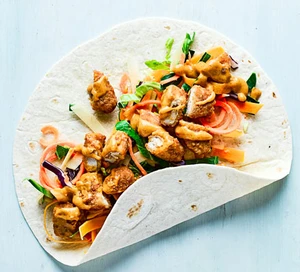

Katsu curry wrap

Description
Your favourite katsu curry in wrap form, ready in minutes! This simple supper is full of flavour, golden brown chicken and needs just 4 ingredients
Serves 4
Ingredients
- 400g pack chicken goujons
- 2 x 140g packs katsu curry sauce
- 4 large tortilla wrap
- 250g pack stir-fry vegetables (without beansprouts)
Steps
- Cook the goujons following pack instructions. Heat the katsu sauce in a small pan until piping hot.
- Once the chicken is cooked and golden, chop into bite-sized pieces and toss with the sauce.
- Warm the tortillas in the microwave, then layer with the chicken and raw veg, roll up and eat.